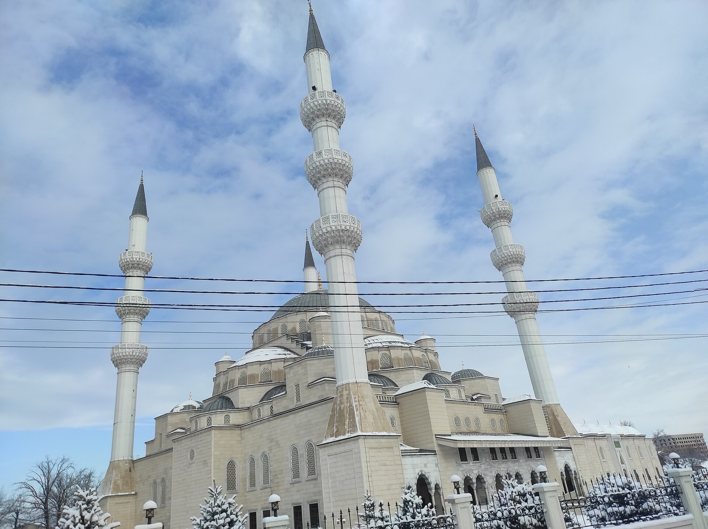

Kyrgyzstan now requires religious bloggers to obtain a "preacher's certificate"
Bloggers who systematically preach religion must obtain a special, one-year certificate based on religious education and Muftiate approval; single posts are exempt.

Kyrgyzstan has begun requiring bloggers and social media users who systematically preach religion to obtain a special state certificate. The rule is administered by the National Agency for Religious Affairs and Interethnic Relations under the President of Kyrgyzstan.
The legal basis
The requirement stems from the country's new law on freedom of religion and religious organizations. Article 13 of the law took effect on 1 February 2025 and introduced the formal concept of a "religious preacher." The law was signed by President Sadyr Japarov in January 2025.
Who it applies to
According to Nurgazy Kyrgyzbaev, chief specialist at the agency, the certificate is required of those who regularly cover religion — authors of texts, videos, podcasts and comments. A single publication or a single comment does not require registration. Employees of the Spiritual Administration of Muslims (Muftiate), madrasas and mosques are exempt.
How the certificate is obtained
Applicants must hold special higher or secondary religious education. Muslim applicants need the consent of the Spiritual Administration of Muslims of Kyrgyzstan (the Muftiate). They then submit to the agency an application, a preacher's questionnaire, a copy of their passport and diploma, and a letter of consent from the relevant central religious body. The certificate is issued for one year and is reissued on expiry. If false information is spread or the law is violated, the certificate is revoked and cannot be obtained again.
A regional trend
Other Central Asian states are also regulating religious life. Kazakhstan has banned face-concealing clothing in public places since 2025 and prohibits religious clothing in school uniforms. Uzbekistan has banned covering the face in public since November 2023, with fines of 10–15 base calculation units. In Tajikistan, 2024 amendments prohibited clothing deemed "alien to national culture."